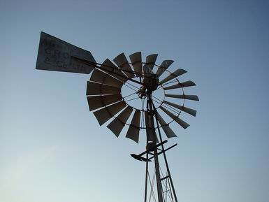

| inicio | | | | | @ | ||
Grabado que pertenece al libro De re metallica (Sobre la naturaleza de los minerales), de Georg Bauer, cuyo nombre en latín es Georgius Agricola
Bombas aspirantes
Los mineros siguieron trabajando como lo hacían antes del famoso descubrimiento de Evangelista Torricelli (1608-1647). Usaban bombas aspirantes e impelentes, encadenadas en serie como lo había enseñado hacía más de un siglo Georgius Agricola (1494-1555).
Las bombas muy antiguas eran casi todas impelentes, ente ellas el famoso tornillo de Arquímedes para drenar campos de cultivo. Pero las bombas aspirantes se conocían desde tiempos remotos, quizá desde el neolítico. Algunos metían en sus cerbatanas estopa prensada y húmeda sujeta al extremo de un palo, y con eso chupaban agua de pozos, cuando no cabía un odre para izarlo con una soga, y la depresión de la succión bucal les resultaba insuficiente.
En la construcción del templo de Salomón (vean, por favor, esta divagación), que relata la Biblia en Reyes 7, 15, hay indicios que dejan suponer que los antiguos conocían el límite de succión de diez metros. Las columnas Jachîn y Boaz medían, precisamente, dieciocho codos de altura, y en ellas hacían vacío para experimentos religiosos. Las bateas inferiores tenían un volumen en coincidencia con el de los tubos.
Pero el uso industrial de la bomba aspirante es del siglo quince, para desagotar los pozos inundados de las minas.
Los mineros sabían muy bien que no se puede aspirar agua desde más de diez metros de profundidad, y le pidieron a Galileo Galilei (1564-1642) que estudiara el caso. El sabio les dio la razón; no había bomba, por potente que fuese, capaz de chupar agua de mayor profundidad, aunque algunos empresarios insistiesen en que todo era cuestión de calidad y potencia.
Galileo, sin embargo, erró su explicación, porque la basó en la resistencia a la rotura por tracción de la columna líquida. Torricelli, después de muerto su maestro Galileo, dio una explicación filosóficamente inobjetable, basada en la compresión. Galileo y sus contemporáneos creían que succionar es tirar de algo, ejercer esfuerzos de tracción. Torricelli, en cambio, sabía que succionar, o chupar, es dejar de hacer presión, y permitir que actúe una presión opuesta. Ése fue el cambio de paradigma, posterior a Galileo; el de cambiar el tirón por el empujón. A Galileo no le habrían perdonado el descubrimiento que hizo su alumno. El Académico era de muy mal genio, no tenía título, daba clases brillantes y ridiculizaba a sus adversarios filosóficos; fue por eso que lo persiguieron, y no por oponerse a las Escrituras. Torricelli y Pascal dijeron, contra Aristóteles, que el vacío es posible, y nadie les objetó nada, porque esos dos filósofos eran un amor de personas.
Imaginemos un depósito de muebles lleno de roperos, y de empleados y empleadas cuya tarea es, apenas comienzan su horario, la de empujar lo que encuentran a mano, sin importar hacia dónde, y sin concertar sus esfuerzos con sus compañeros y compañeras de trabajo. (Son de la Municipalidad de ******.) Los muebles estarían todos inmóviles, empujados desde lugares opuestos con denodados e infructuosos esfuerzos, o apenas se deslizarían un poco. La persona encargada del depósito, cuando quiere mover efectivamente un mueble, despide a los empleados que los empujan de ese lado.
- El despido ejerce una fuerza de atracción sobre los muebles - asegura.
- Y lo mismo ocurre si doy vacaciones a parte de la gente que trabaja aquí. Para mover los muebles sólo es cuestión de elegir bien a quién se despide o se licencia. - ¿Y por qué la presión de atracción del despido parece ser una constante?
- Seguramente ha de ser porque hay unos delgados, llamados despedículos, invisibles, que se rompen si se les exige demasiada fuerza. (Realmente se llegó a exponer la idea de los funiculi.)
Un día aparece un Torricelli que dice que vivimos sumergidos en un mar de empleados y empleadas torpes, que sólo saben empujar, y que lo que parece una fuerza de tracción es sólo la compresión de quienes no han sido despedidos ni se les dio licencia. En el Concejo se comenta con admiración la audacia de esa hipótesis, pero se la rechaza, porque implicaría una reducción de la mano de obra, con el perjuicio de muchas familias.
El pozo de la casa veraniega de mi infancia era muy profundo, de unos cuarenta metros, y la napa freática estaba a doce metros. Pero el cilindro del molino trabajaba casi sumergido, a unos ocho o diez metros de profundidad.
Un día que mi padre debió bajar a repararlo, hizo descender antes una vela colgada de un alambre, y notó con alarma que se apagaba.
- Aquí hay fortín (¿o fourteen?) -dijo.- Hay gases, y falta oxígeno. -Y puso a funcionar una aspiradora durante media hora, o más, hasta que la vela permaneció encendida cuando la bajó. Un vecino de Buenos AIres, Carlos *******, apodado El Chino, que estaba ahí, me rogó que le pidiese a mi padre que no bajase, y no me atreví a obedecerlo. Mi padre bajó. Unos colaboradores lo sostuvieron con una soga, con instrucciones de izarlo si se desvanecía. Todo anduvo bien, y arregló el molino. Aquella noche tuve pesadillas.

| Publicado originalmente en http://www.elistas.net/lista/divagaciones/archivo/indice/41/msg/54/. Se permite su reproducción citando la fuente. Última actualización nov-2017. Buenos Aires, Argentina. |